LITORAL NORTE
São Sebastião
Praias, aula de surf, trilhas e passeios para viver o litoral como uma experiência com a Rud Viagens.
Quero saber mais →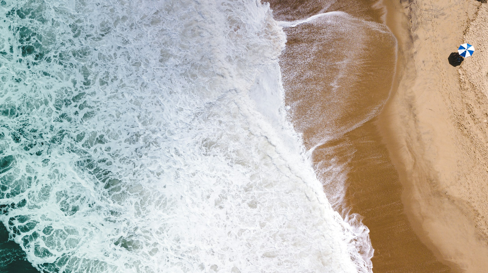
A EXPERIÊNCIA
Mais que uma praia: um jeito de viver o litoral.
Uma experiência para alternar mar, natureza e movimento: praias, aula de surf, trilhas e passeios escolhidos para o grupo e para a época da viagem.
Atividades sugeridas
Praias do Litoral Norte, experiência de surf, trilha e passeios de natureza. A programação final é definida na proposta, conforme seu perfil e a época da viagem.
O que pode estar incluído
- Hospedagem e deslocamentos definidos
- Experiência de surf e passeios contratados
- Orientação antes e durante a viagem
O que não está incluído
- Serviços não indicados na proposta contratada
- Despesas pessoais
Datas, duração e serviços são definidos de acordo com seu perfil e a disponibilidade. A proposta é confirmada antes da reserva.
Como funciona
Conte seu período, perfil, preferências e orçamento pelo WhatsApp. A Rud Viagens organiza uma proposta com roteiro, serviços e condições. O planejamento está incluído na contratação.
Quando acontece
As datas e a duração são combinadas na proposta, conforme disponibilidade e época da viagem. Os roteiros apresentados são sugestões para seu planejamento.
Informações importantes
Antes da reserva, confirme inclusões, exclusões, deslocamentos e o preparo necessário para as atividades. Durante a viagem, você tem contato direto com Rudnei pelo WhatsApp, com disponibilidade combinada antes do embarque.
Quer viver São Sebastião?
Falar com a Rud Viagens no WhatsApp →FOTOS DO DESTINO
O clima do Litoral Norte
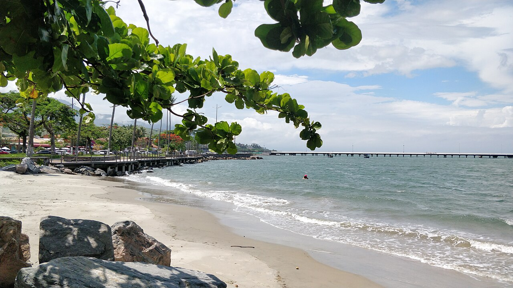
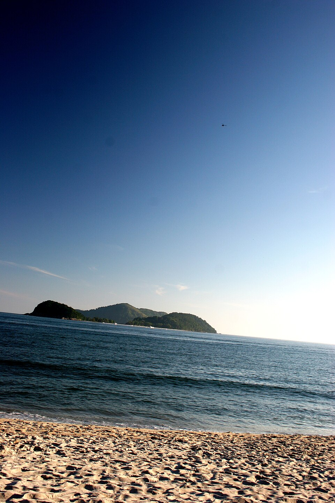
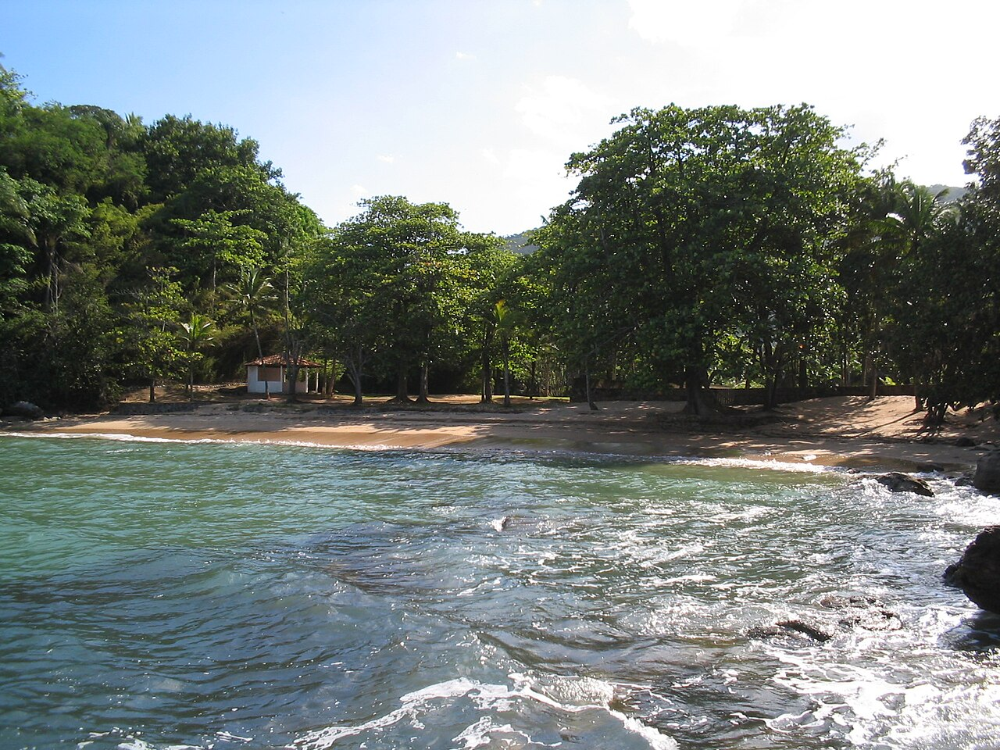
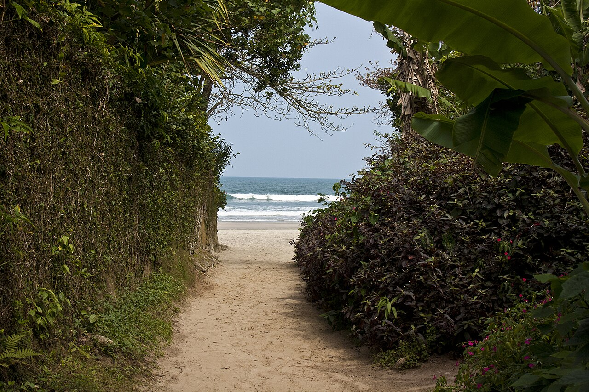
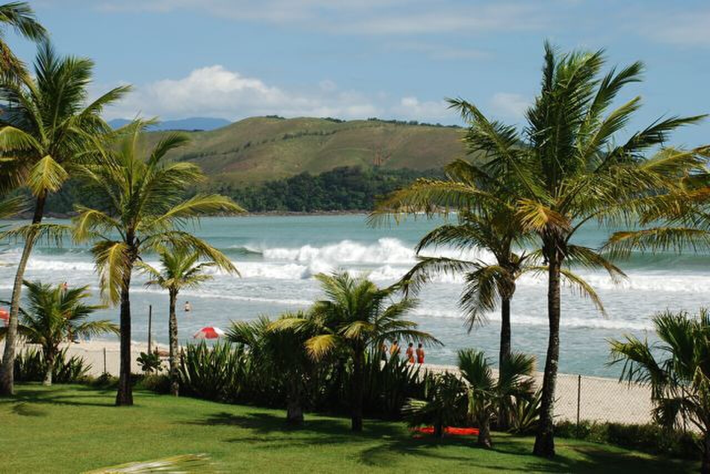
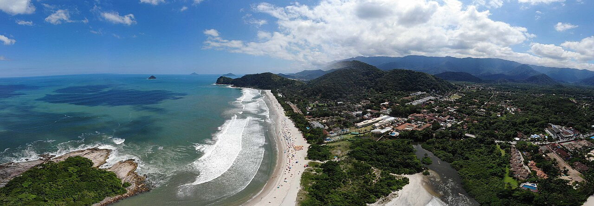
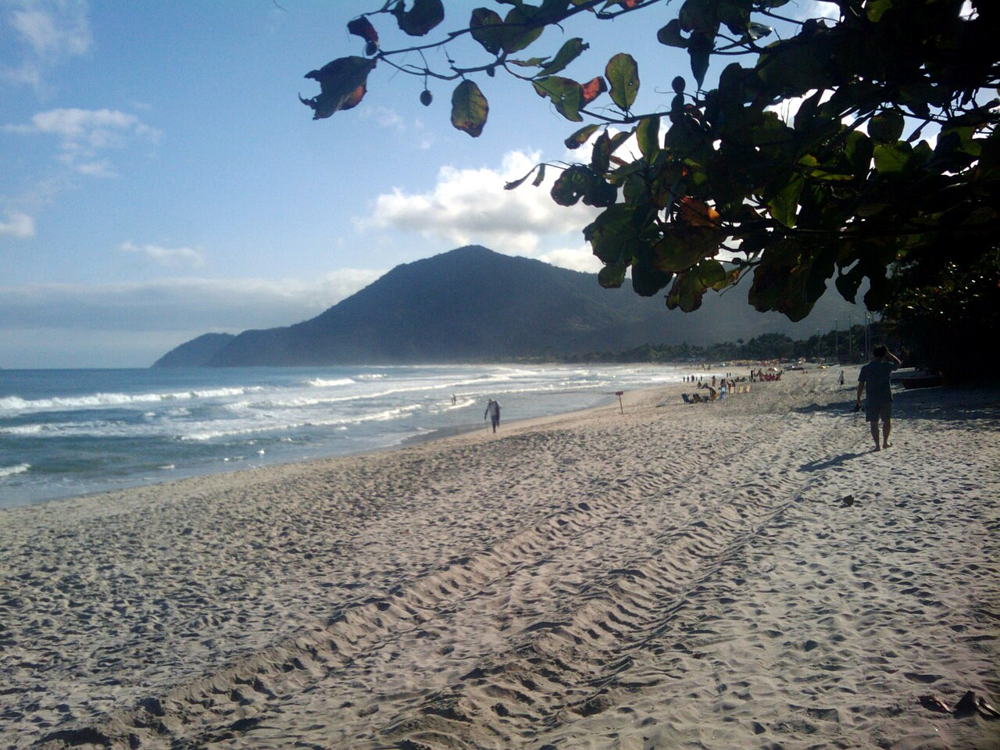
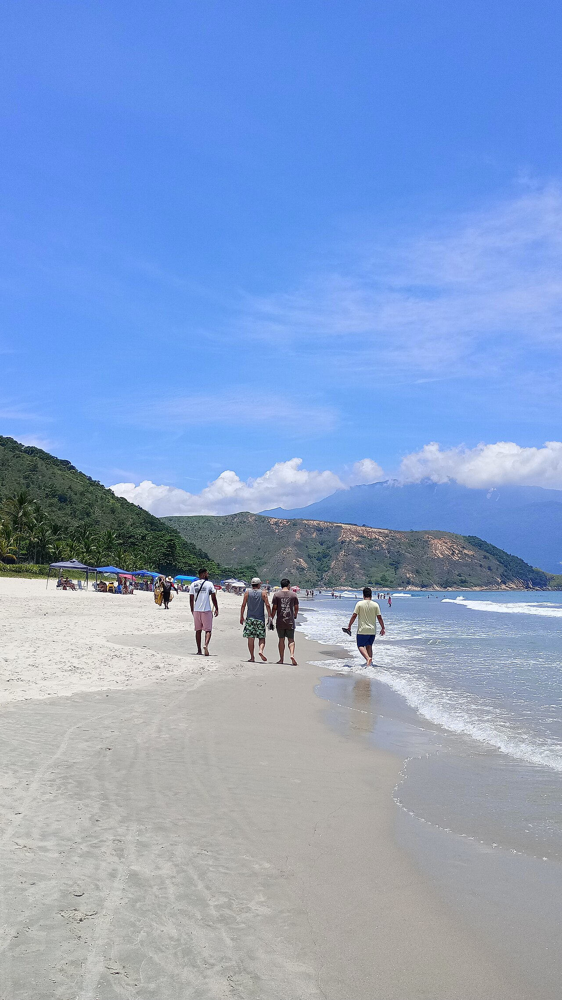
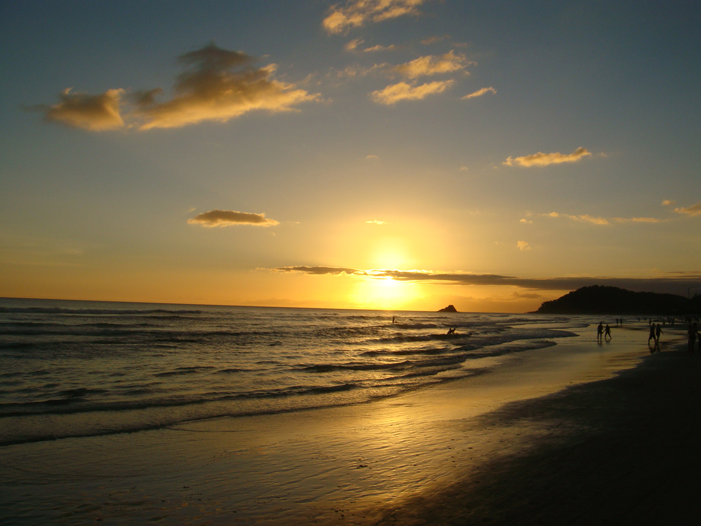
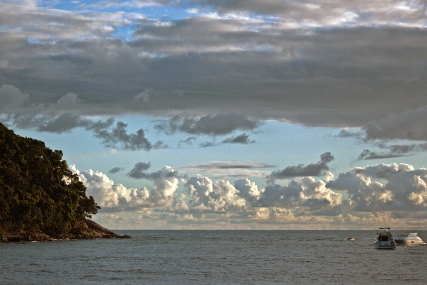
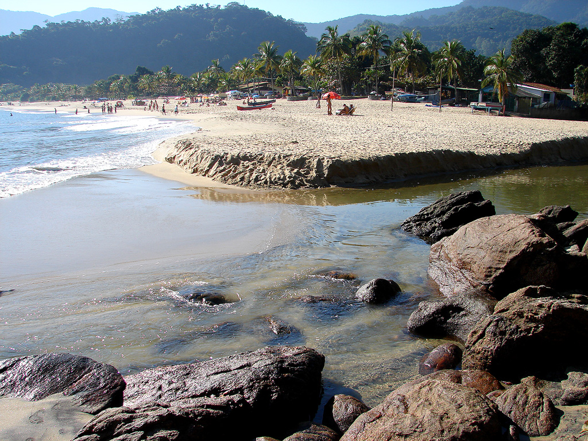